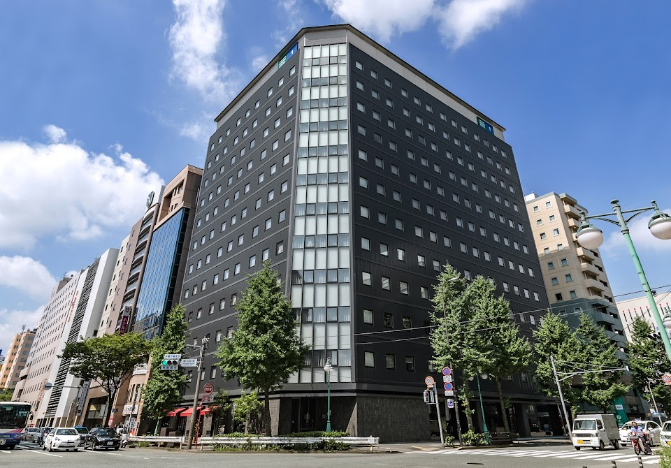

이 호텔은 불친절 관련 불만이
후쿠오카 평균보다 1.9배 많아요!

위치
일본 〒812-0012 Fukuoka, Hakata Ward, Hakataekichuogai, 4−4 博多グリーンホテル１号館 1F · 1박 약 10만원 (10만원 미만 가격대)
이 호텔에서 실망할 확률
9%
후쿠오카 평균(9%)보다 평균적인 수준이에요
최근 투숙객 100명 중 9명이 심각한 문제를 언급했어요
최근 투숙객 100명 중 9명이 심각한 문제를 언급했어요
우수
평균 9%
위험
최근 리뷰일수록 높은 가중치로 반영됩니다
분석 리뷰 500건 · 기준 2026년 3월
분석 리뷰 500건 · 기준 2026년 3월
카테고리별 위험도
후쿠오카 평균 = 50 · 3배 나쁘면 100
하카타 그린호텔 1호관
후쿠오카 평균
리스크 상세 분석
대분류 6개 · 소분류 20개 전체 — 숫자는 위험도(0~100), 후쿠오카 평균이면 50이에요
🧼위생 경보
양호 · 위험도 29 · 후쿠오카 상위 24%
양호평균 50위험
-
침구/바닥 청결얼룩 · 머리카락 · 먼지34
-
청소 서비스청소 불량 · 쓰레기 방치25
-
해충/곰팡이벌레 · 빈대 · 곰팡이0건4
👂오감 지옥
양호 · 위험도 23 · 후쿠오카 상위 16%
양호평균 50위험
-
벽간/외부 소음옆방 소리 · 도로 소음22
-
악취 역류하수구 · 담배 · 곰팡내24
-
기기 소음에어컨 · 냉장고 소음0건4
🏚️시설 사기단
양호 · 위험도 28 · 후쿠오카 상위 11%
양호평균 50위험
-
공간/노후화비좁음 · 낡은 시설31
-
냉난방/수압냉난방 불량 · 수압 약함20
-
네트워크/TV와이파이 · TV 불량21
🗺️동선 파괴자
양호 · 위험도 14 · 후쿠오카 상위 5%
양호평균 50위험
-
역/거점 접근성역에서 멀다 · 찾기 어려움12
-
지형적 난관언덕 · 계단14
-
주변 편의성편의점 · 식당 없음23
-
허위 위치 정보위치 정보 불일치0건4
💬불친절 레이더
위험 · 위험도 73 · 후쿠오카 하위 9%
양호평균 50위험
-
응대 태도불친절 · 무시42
-
처리 지연체크인 지연 · 대기29
-
사후 대처보상 거부 · 무대응100
-
소통 불가언어 소통 문제0건4
🔒안전 그림자
양호 · 위험도 8 · 후쿠오카 상위 6%
양호평균 50위험
-
보안 시설도어락 · CCTV14
-
주변 치안밤길 · 우범지대0건4
-
사생활 보호방음 · 프라이버시0건4
위험 70+주의 45~70양호 ~45
불만 리뷰 5건 미만 소분류는 위험 등급을 붙이지 않아요 · 인용문은 리뷰 원문 발췌입니다
구글 별점 분포
최근 1년 2점 이하 리뷰 비율은 6% 입니다.
총 267건
- 1점4%
- 2점1%
- 3점10%
- 4점26%
- 5점59%
리뷰
심각도 · 최신순
이런 호텔은 어떠세요?
비슷한 가격대·가까운 위치에서 실망 확률이 낮은 순이에요
-
양호실망 확률 3%

리치몬드 호텔 하카타 에키마에
リッチモンドホテル博多駅前구글 4.1 · 리뷰 989개1박 약 8만원 -
양호실망 확률 4%

몬탄 하카타 호스텔
モンタン博多 montan HAKATA구글 4.5 · 리뷰 1,285개 -
양호실망 확률 4%

야오지 하카타 호텔
八百治博多ホテル구글 4.0 · 리뷰 2,057개1박 약 9만원 -
양호실망 확률 4%
호텔 홋케클럽 하카타
ホテル法華クラブ福岡구글 4.2 · 리뷰 2,157개1박 약 7만원 -
양호실망 확률 3%

베스트 웨스턴 플러스 후쿠오카 텐진-미나미
ベストウェスタンプラス福岡天神南구글 4.1 · 리뷰 698개1박 약 9만원 -
양호실망 확률 4%

Wellcabin Tenjin
ウェルキャビン天神구글 4.2 · 리뷰 459개1박 약 5만원 -
양호실망 확률 6%

시즈테츠 호텔 프레지오 하카타에키마에
静鉄ホテルプレジオ博多駅前구글 4.2 · 리뷰 1,045개1박 약 8만원 -
양호실망 확률 5%

코트 호텔 후쿠오카 텐진
コートホテル福岡天神구글 3.8 · 리뷰 726개